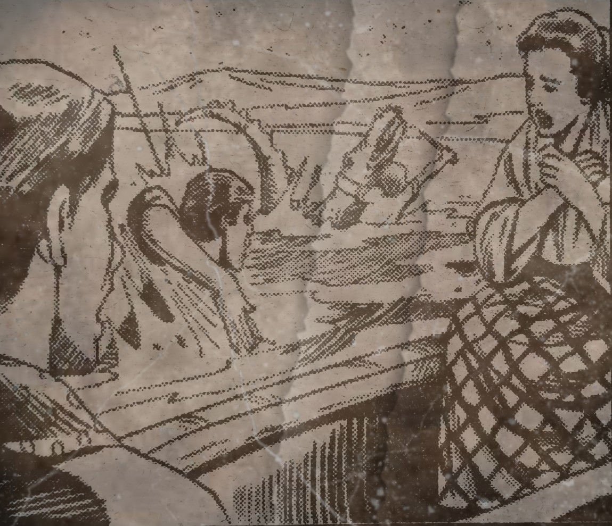
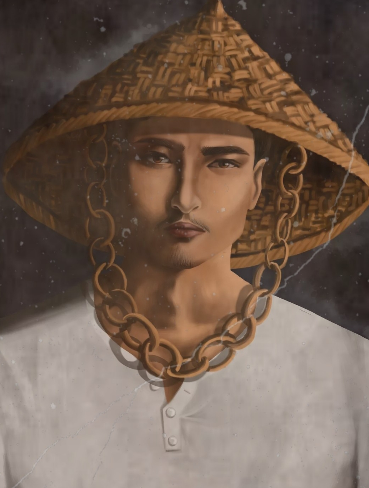
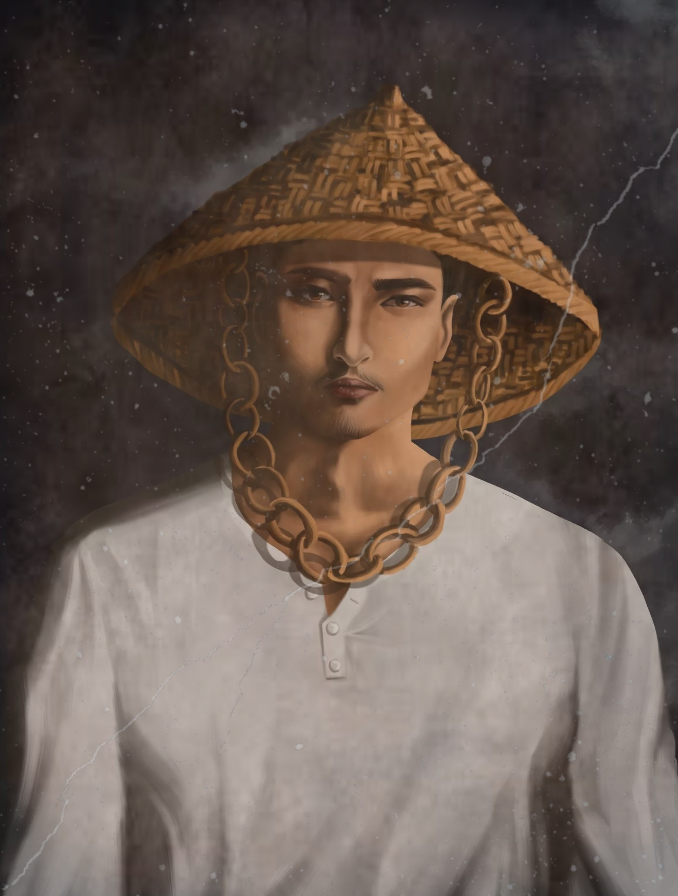
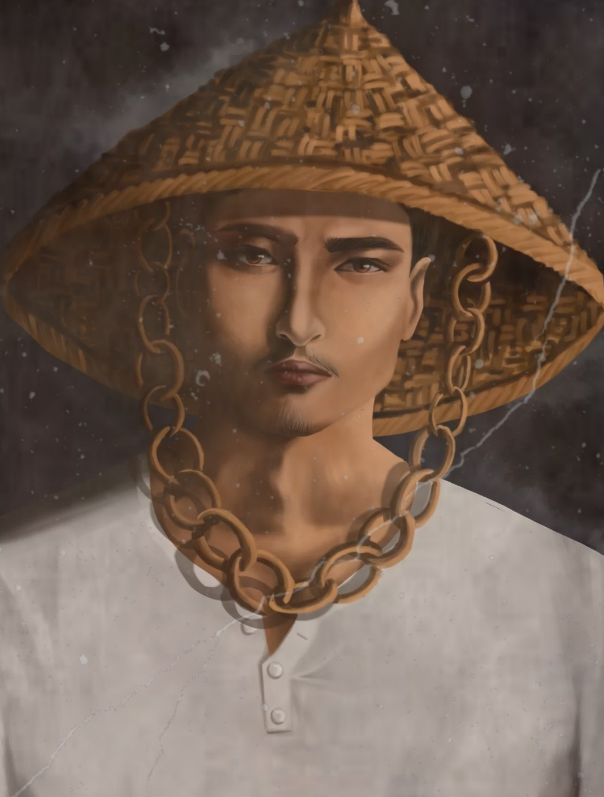

Kabanata 23
Ang Pangingisda

Madaling araw noon at may ilang kabataan, kadalagahan, at ilang matatandang babae na naglalakad papunta sa mga bangka na nakaparada sa dalampasigan na may dala-dalang mga pagkain.
Pinaghiwalay ng matatanda ang mga dalaga at binata ngunit gumawa ng paraan si Albino upang magkatabi-tabi ang limang pares.
Masaya silang nagmamasid-masid sa lawa. Nagpatugtog naman si Maria at umawit. Masaya ang lahat sa piknik nang biglang nakahagilap ni Elias ng isang buwaya. Pinagtulungan nina Elias, Ibarra at ng iba pang mga binata ang pagpatay ng buwaya. Pinasalamatan naman ni Elias si Ibarra sa pagsagip ng buhay niya. Pagkatapos ng lahat, nagpatuloy ang magkakaibigan sa pangingisda at sa piknik.
Repleksyon
Tumalon si Crisostomo sa lawa at niligtas niya si Elias sa tiyak na kamatayan. Natutunan ko na kapag gumawa ka ng mabuti sa iba ay gagawa din sila ng mabuti sa iyo.
Mahalagang Tauhan


